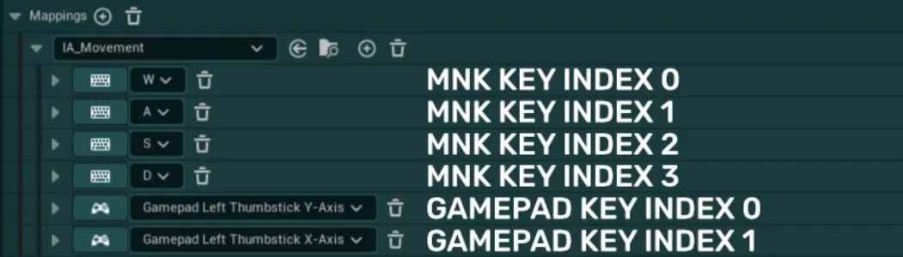

输入提示系统¶
内置的输入提示（Input Prompts）系统可让你轻松显示按键图标，引导玩家了解可用的按键绑定。这些输入提示已用于本资源包中的大多数 UI，在以下指南中，你可以了解如何在自己的系统中使用它们：
单个输入提示控件¶
基础输入提示控件允许你在任意控件中显示单个自定义输入提示，既可以使用硬编码按键，也可以通过输入操作（Input Action）动态获取
- 在你的项目中，打开想要显示简单输入提示的控件
-
在「调色板（Palette）」标签页中搜索
Easy Input Prompts分类，然后将WBP Easy Input Prompt Displayer控件拖放到任意容器中（画布面板、水平框、按钮等） -
添加后，你会在细节（Details）面板的
Easy Config分类下看到许多可用变量Keys Definition用于控制控件需要显示哪些按键Use Input Action?如果想使用输入操作来显示输入，请勾选此复选框。若想硬编码按键，则不要勾选-
Input Action Definition如果勾选了上一个复选框，此时需要填写你想显示的输入操作的相关信息在下拉列表中选择输入操作（Input Action），并选择要从中获取按键绑定的输入映射上下文（Input Mapping Context）
如果所选输入操作在映射上下文中每个设备对应多个按键，则需要指定要显示的按键索引。
在下面的示例中，键盘按键有 4 个索引，手柄按键有 2 个索引。如果想显示“D”和“Thumbstick X-Axis”，需要在对应字段中分别输入索引 3 和 1。

-
Hardcoded MNK Key与Hardcoded Gamepad Key如果未勾选上一个复选框，此时可以通过两个下拉列表并输入按键名称，来指定想要显示的硬编码按键
无需同时填写两个按键。如果只想为单个设备显示按键，只填其中一个即可
-
Device Display Conditions此变量有三个选项，用于控制按键的显示：Dynamic Based on Device会根据当前使用的设备，显示手柄按键或键鼠按键Only Mouse & Keyboard Keys无论使用何种设备，都只显示键鼠按键Only Gamepad Keys无论使用何种设备，都只显示手柄按键
-
Invalid Key Hide Conditions此变量控制当按键无效时（例如设备不匹配、找不到按键等）输入提示应如何反应Keep Input Prompt and Text Visible当使用其他设备或按键无效时，输入提示和文本仍然可见Hide Input Prompt Only当使用其他设备或按键无效时，输入提示会被隐藏，但文本仍可显示Hide Input Prompt and Text当使用其他设备或按键无效时，输入提示和文本都会被隐藏
例如：如果将输入提示设置为仅显示手柄按键，并把此变量设为 “Hide Input Prompt Only”，那么当玩家使用键盘而不是手柄时，就可以隐藏该输入提示
-
Input Type此变量用于在三种选项中选择按键应显示的输入类型：
Single Tap适用于大多数场景的基础单击按键Hold需要按住指定时长的按键Button Mash需要在指定时长内反复按下的按键
Styling Definition可用于控制按键大小、在按键旁添加可选文本，以及更改输入提示的整体样式Icon Size此设置以像素为单位定义所显示输入提示图标的大小Additional Text在按键旁显示的可选文本。如果无需显示文本，可以留空Text Styling一组用于控制文本字体、变换策略和对齐方式的选项Text Position用于控制文本相对于按键图标位置的选项。只能选择右对齐和左对齐Text Padding为文本添加的可选内边距


多个输入提示控件¶
多输入提示控件允许同时显示多个自定义输入，但与简单输入提示控件相比，它对上述图标的样式和显示的控制要略少一些
- 在你的项目中，打开想要显示多输入提示的控件
-
在「调色板（Palette）」标签页中搜索
Easy Input Prompts分类，然后将WBP Easy Multi Input Prompt Displayer控件拖放到任意容器中（画布面板、水平框、按钮等） -
添加后，你会在细节（Details）面板的
Easy Config分类下看到许多可用变量Keys Definition是一个数组，你可以在其中列出所有想显示的按键；每个按键的配置与简单输入提示的按键定义完全相同Styling Definition可用于控制所有所显示图标的样式（它们将共用同一样式），其配置与简单输入提示的样式定义完全相同Spacing定义每个所显示输入图标之间的间距


富文本输入提示¶
富文本输入提示可以对显示的文本进行更精细的控制，同时仍能在文本中动态显示输入。例如，这在教程中非常有用
- 在你的项目中，打开想要显示多输入提示的控件
-
在「调色板（Palette）」标签页中搜索
Easy Input Prompts分类，然后将WBP Easy Input Rich Text控件拖放到任意容器中（画布面板、水平框、按钮等） -
添加后，你会在细节（Details）面板的
Easy Config分类下看到许多可用变量-
Rich Text to Display基础的富文本输入。如果你不熟悉富文本的用法，可以查看以下文档此富文本控件具有默认样式，支持如下列出的多种字体。如果想编辑这些样式或添加自己的“修饰符（modifier）”，可以在
DT_DefaultRichTextStyling数据表中进行
-
Keys Definition通过多个数组来控制控件需要显示哪些按键。在这些数组中，你可以定义多个输入操作或按键，从而在富文本中显示多个动态按键对于这些数组中的每个按键，在文本中添加对应的
{index}：{0}将显示第一个按键，{1}将显示第二个按键，依此类推
以下是一个设置示例：
-
Rich Text Styling一组定义富文本样式的变量Text Styling一组用于控制文本字体、变换策略和对齐方式的选项Use Inputs Size Local Override?如果为 True，输入将使用所定义的大小覆盖值，而不是文本字体大小Input Size Override此设置以像素为单位定义所显示的输入提示图标的大小（在启用覆盖时）Wrap Text?如果为 True，文本将允许在需要时在其容器内自动换行Use Text Color Local Override?如果为 True，文本将使用所定义的文本颜色Text Color Override覆盖默认颜色时要使用的文本颜色
-


世界输入提示¶
世界输入提示（World Input Prompt）可以轻松地直接在 3D 世界中显示输入提示。系统随后会使用多输入提示控件（Multi Input Prompts widget）来显示所需的输入
- 要在关卡中使用它，请前往
EasyGameUI/EasyInputPrompts/Core文件夹，找到BP_EasyWorldInputPrompt -
将其拖放到关卡中 3D 输入提示应出现的位置。红色箭头指示该控件将从哪个方向可见

-
随后你可以在
Details面板中、Easy Config分类下访问所有设置Keys Definition是一个数组，你可以在其中列出想显示的所有按键，每个按键的配置与简单输入提示的按键定义完全相同-
Display Type定义控件在World与Screen之间以何种方式渲染-
World控件完全作为 3D 世界对象运行（在世界中具有固定位置与旋转，并且当玩家绕文本移动时具有正确的视差效果）
-
Screen控件会尝试相对于其位置在屏幕上保持固定大小。它还会自行旋转，以便无论摄像机角度如何都保持在屏幕上
-
-
Resolution Multiplier定义控件应放大多少倍。数值越高画质越好，但性能开销也越大，此设置在很大程度上取决于玩家能靠多近以及控件有多大 Styling Definition允许你控制所有已显示图标的样式（它们将共用同一套样式），其配置与简单输入提示的样式定义完全相同Spacing定义每个已显示输入图标之间的间距